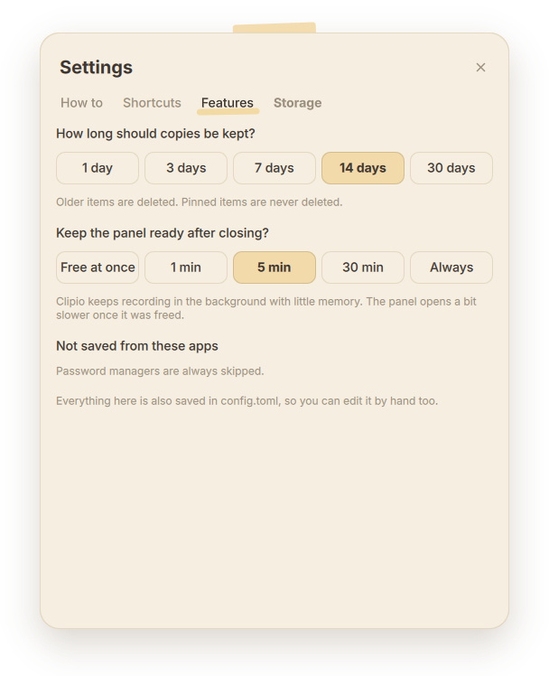

Open them with the gear button or Ctrl ,
A small animated guide for every feature.
Click a key, press the new one. Done.
Switch each one on or off.
How long items stay, how long the panel stays ready, which apps to skip.
